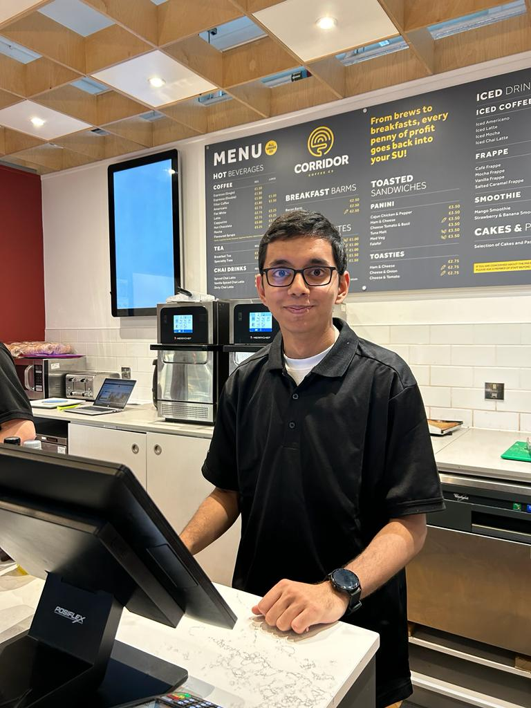
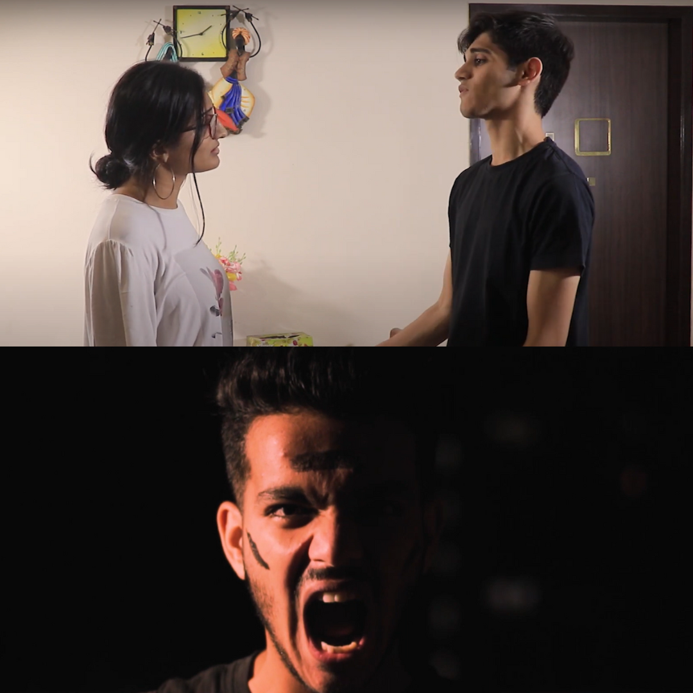

💻 switch(Academic & Personal Projects)
Selected work across AI, analytics, forecasting, and data products, with an emphasis on turning complex data into usable decision-support systems.
I build data and AI products that turn complex information into practical business decisions. My work spans machine learning, analytics, backend data systems, cloud deployment, and stakeholder-facing tools, with a focus on making intelligent systems reliable, useful, and easy to act on.
About MeSelected work across AI, analytics, forecasting, and data products, with an emphasis on turning complex data into usable decision-support systems.
Core skills aligned around building business-facing AI systems: retrieval, modelling, backend services, cloud deployment, and product delivery.
Digital Communications Director
Customer Assistant

Beyond data science, I have a deep passion for filmmaking, graphic design, video editing, and cinematography. Whether freelancing or as a hobby, I create content that tells stories and inspires. I actively produce and share creative work on my YouTube channels, TarunMotionsFilms and MishrajiSmile, showcasing my skills in video editing, cinematography, and storytelling.
